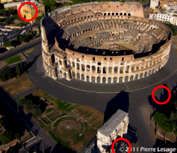

Tutorials
Please DO NOT
give students the link to this page. This page contains information for
teachers.
If you wish to give students this page, please send them here:
https://dokilen.github.io/main/
Student Astronaut Project
Photoshop
A semester project, students create a cartoon version of their
head, build an entire solar system (complete with stars, nebula, sun, planets,
comet, and asteroids), and create an animation of their head in a cartoon
spaceship flying thru the solar system.
Student Astronaut Project
Photopea
Same as the above project, but directions are written for
Photopea.
PLEASE NOTE that enough of these Astronaut
Projects exist on the Internet that students may find one of the images and
attempt to pass it off as their own.
ALWAYS require students to turn in the psd file with all layers included!
A
New Me
Photopea
Students take a headshot of themselves and replace various facial
features (eyes, ears, nose, mouth, hair) with facial features from famous
people.
Alien
Photopea
All students turn a headshot into an alien, and then students
turn themselves into a large headed, green skinned alien with a tail.
Removing Objects
Photopea
Covers seven different methods to remove objects from a static
image. Includes individual extension activity where students select a panoramic
image and remove the people from it.
For the exercise at the end, if may be helpful to assignment images to individual students. This will avoid them selecting an image to edit that is beyond their skill set.
Please note that in an effort to avoid students
simply downloading the image on Step 1 without the people and turning that in,
that I have incorporated several edits to the image that will let you know that
students did not complete the work.

On the yellow/orange building on the left I have included a balcony that is not
in the original image.
The shadow on the right has been decreased.
The copyright in the image they are supposed to download and use during the
tutorial does not reach the light colored building.
This image is smaller than the full-sized image (this one is 250x216).
Finally, a large part of both the top and bottom of the full-sized image have
been cropped off.
I hate that students try to cheat on this project, but I have had students attempt to pass off this image as their own before. I've even had students claim they resized it, cropped it, and removed the copyright notice and shadow. But when you ask them what other changes they made, the yellow/orange building always catches them.
Also, you may have some students who find it easier to remove the watermark on the final image at the bottom of Step 9 and try to turn that in. If that happens, please note that while the copyright notice is the same as the one from the image that they should have used during the tutorial, that the yellow/orange building, the shadow, and the crop have all been adjusted for this image as well.
Just tell them not to cheat.
Creating a Giant
Photopea
All students turn a guy pushing a car into a giant pushing down a
building. Individual extension activity has students creating an image with
themselves as the giant.
If you have students who are already familiar with working in Photoshop/Photopea or who complete this assignment quickly, I recommend assigning them a background image where they have to put themselves in water. This will force them to add in ripples and a reflection. The exercise page does mention images with water, but per the instructions they are not required to select one. Assigning them a water image will increase their work time.